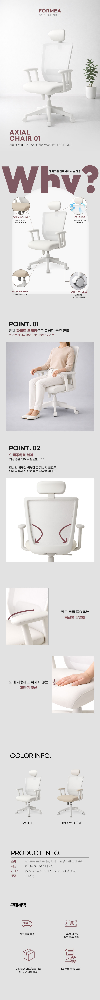

Axial Ergonomics: Minimalist Office Chair Landing Page
균형 잡힌 업무의 시작: 엑시얼 에르고노믹 데스크 체어 상세페이지
Product Detail
Design Point
- 1 미니멀리즘과 공간의 조화
- 화이트와 그레이 톤을 베이스로 활용하여 어떤 인테리어에도 자연스럽게 어우러지는 제품의 디자인적 강점을 부각했습니다. 여백의 미를 충분히 활용한 레이아웃은 사용자에게 시각적 편안함을 제공하며, 포인트 컬러로 활용된 뮤트 브라운(Mute Brown) 계열의 타이포그래피는 브랜드의 신뢰도와 차분한 전문성을 동시에 전달하는 역할을 합니다.
- 2 사용자 경험 중심의 기능 소구
- 'Why?'라는 직관적인 질문을 통해 소비자의 시선을 머물게 한 뒤, 제품의 디테일한 기능을 논리적으로 설명했습니다. 헤드레스트 조절, 메쉬 소재의 통기성, 요추 지지대 등 사용자가 의자를 선택할 때 가장 중요하게 고려하는 요소들을 근접 촬영된 고해상도 이미지와 함께 배치하여 제품의 퀄리티를 시각적으로 증명하는 데 집중했습니다.
- 3 인체공학적 설계의 시각화
- 추상적인 '편안함'이라는 키워드를 구체적인 이미지로 형상화했습니다. 모델이 실제로 착석한 이미지를 통해 바른 자세의 가이드를 제시하고, 의자의 곡률과 쿠션의 탄성감을 보여주는 클로즈업 컷을 활용해 장시간 업무에도 피로감이 적다는 핵심 가치를 효과적으로 전달했습니다. 이는 제품의 기능적 우수성을 강조하여 구매의 당위성을 부여합니다.
- 4 정보의 체계화와 구매 편의성
- 상세페이지 하단부에 제품 규격(Product Info), 컬러 라인업, 그리고 배송 및 AS 안내를 아이콘과 함께 배치하여 정보 탐색의 효율성을 높였습니다. 텍스트 위주의 지루한 정보 나열이 아닌, 심플한 픽토그램을 활용해 소비자가 필요한 정보를 빠르게 습득하고 구매 결정 단계에서 느낄 수 있는 궁금증을 선제적으로 해소하도록 설계했습니다.

